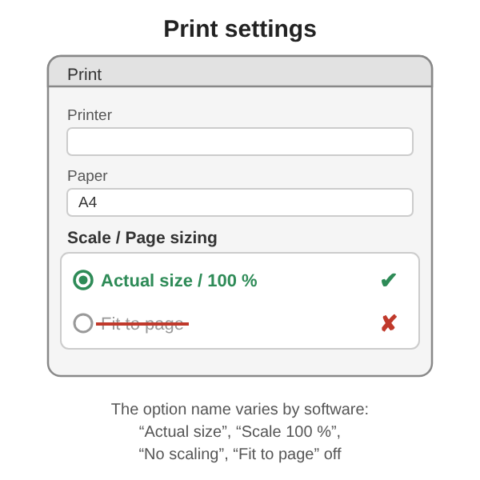
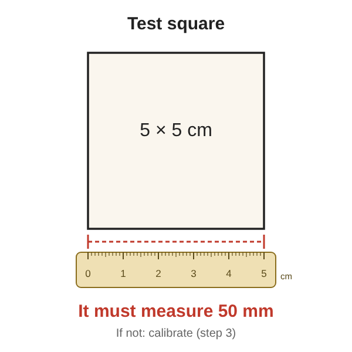

Printing at the right size
1. Print at actual size
In your computer’s print settings, choose “Actual size” or “Scale 100 %”. Avoid “Fit to page”: the pattern pieces would no longer be to scale.

Where to find this setting depending on your software:
- Chrome or Edge: Print → More settings → Scale: “Custom”, 100.
- Firefox: Print → Scale: 100 %.
- Adobe Reader: Print → Page Sizing: “Actual size”.
- Preview (Mac): Print → Scale: 100 %.
- Smartphone: the setting is not always available; preferably print from a computer.
Note: these labels may vary depending on the version of your software.
2. Check the 5 cm test square
Each PDF contains a 5 × 5 cm test square. Measure it with a ruler: it must measure 50 mm.

3. Correct if needed
If your printer still shrinks the page, enter the value you measured in “Print calibration” in the pattern tool (48 mm in our example), then download the PDF again: it will be enlarged to compensate. If you have switched the tool to inches, measure and enter the side in inches instead (the 5 cm square is about 1.97 in).
4. Pieces larger than an A4 page
Large pieces are automatically split over several A4 pages. Cut along the corner marks of each page, overlap the 1.5 cm overlap zones so that the lines of the piece continue exactly from one page to the next, then tape them together.